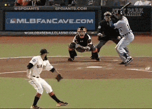

The Motor Program
Lesson 1 left us with a plan that runs without feedback. Now the question: what is that plan — and what’s actually inside it?
By the end of this lesson you will be able to…
- 1Define a motor program (Keele’s definition) and explain “without feedback.”
- 2List the components a simple motor program specifies.
- 3Trace the flow from task goal to movement outcome.
- 4Recognize actions that are likely motor-program controlled.
So what is the “plan”?
Lesson 1 ended here: fast actions — the brake, the pitch, the jab — are too quick to steer with feedback, so they must be planned in advance and run as a unit. We gave that plan a name:
The motor program — a pre-structured set of movement commands.
But that’s just a label so far. This lesson opens it up: where does it come from, what does it contain, and how does it run on its own?
Where the program comes from: the central executive
You met this idea in the theories module. In the motor-program view, coordination is organized top-down by a central executive — the brain packages and issues the plan, and the muscles carry it out.
That’s the source. Now let’s zoom in on the plan itself.
What a motor program is
The classic definition of a “simple” motor program comes from Keele (1968, p. 387) — and it’s the one to hold onto:
“A set of muscle commands that are structured before a movement sequence begins, and that allow the entire sequence to be carried out uninfluenced by peripheral feedback.”
Two phrases carry the whole idea: structured before (it’s planned in advance) and uninfluenced by peripheral feedback (once it starts, it runs on its own).
Peripheral feedback is the feedback provided by the sensory organs of the body — proprioception (from muscles and joints), vision, hearing, and the other senses. Saying a movement runs “uninfluenced by peripheral feedback” means that once the program starts, none of these incoming signals can reach back and alter the commands already in flight.
“Without feedback” — what that really means
This is the heart of the concept, and it connects straight back to Lesson 1. A motor program is the open-loop case made concrete:
Runs to completion
Once triggered, the whole command sequence plays out as a unit — like pressing “go” on a pre-recorded sequence.
No mid-course edits
Peripheral feedback can’t reach back in time to change the commands already in flight. There’s no comparator correcting it.
That’s exactly why motor programs matter for fast actions: when there’s no time to correct, a pre-structured program is the only way to control the movement.
A bit of history: Lashley’s patient
The idea that we hold a set of stored muscle commands, ready for action, has been around a long time. But the first important documentation that movement could be controlled centrally came from Lashley (1917), describing a patient with a gunshot wound to the back.
The wound left the patient with no sensation from his lower limbs — but his efferent (outgoing, motor) pathways were intact, so he could still move. Even though he could not feel his leg moving, he could position it with surprising accuracy, much like a normal control subject.
If he couldn’t feel the limb, he couldn’t have been using feedback to guide it. Lashley argued the movement must have been controlled centrally — an early case for the motor program.
You’ll see this same logic return in Lesson 3, in the deafferentation studies that put Lashley’s idea to a controlled test.
Recounted in Schmidt, R. A. (1975), Psychological Review, 82(4), p. 231 (citing Lashley, 1917).
Components of a simple motor program
A simple motor program specifies four things about the movement. Click each to reveal it — all four to continue:
Which muscles fire, and in what sequence — the ordering of the whole chain of contractions.
How long each part lasts relative to the others — the rhythm of the movement.
The level of muscle activation — how strongly each muscle is driven to contract, which sets the force the movement produces.
Which muscles are selected to carry out the action in the first place.
Reveal all four components to continue.
From task goal to movement
Putting it together: a task goal enters the executive, which builds and issues the motor program to the effectors, producing the outcome — one way, no feedback loop:
There’s no return arrow. Compare this to the closed-loop diagram from Lesson 1 — the motor program is the open-loop path, with no comparator and no feedback correcting the movement in progress.
Assemble a motor program
A motor program for one action has to specify all four components. Drag each chip into the matching slot to build the program. Fill all four to continue. (On a touch screen, you can also just tap a chip.)
Place all four components to continue.
Typing a common word
Type the word “the” if you’re a practiced typist, and notice: you don’t place each finger deliberately. The sequence — right index, left index, right middle finger — fires as one pre-planned unit.
Even if you don’t watch your hands — or get delayed visual feedback — the sequence continues without interruption. That’s the signature: it was structured in advance and runs uninfluenced by feedback.
Saying a word out loud
Speech is one of the most finely controlled motor programs we have. Pronouncing a single word like “apple” requires precise coordination between the larynx (voice box), the tongue, and the lips — each moving in the right order, with the right timing, to shape the sound.
“ap” → “ple”: the lips close and release, the tongue rises to the roof of the mouth, and the larynx switches voicing on and off — all in a fraction of a second.
A fluent speaker doesn’t consciously steer each articulator. The whole articulatory sequence is structured in advance and runs too fast for feedback to correct mid-word — which is exactly why a slip of the tongue usually plays all the way out before you can catch it.
A well-trained baseball pitch
The whole sequence — wind-up, stride, trunk rotation, arm acceleration, release — is planned before the movement begins.

Once the throw is initiated, it proceeds too quickly for feedback to adjust individual components mid-throw. Even with partly obscured vision or an unexpected noise, the throw continues as pre-structured muscle commands.
Fast vs. slow: can you stop in time?
“Too fast to adjust” is easy to say — here’s a way to feel it. A dot sweeps toward the red line. Hit Stop right as it reaches the line. Try it slow first, then fast.
Press Start, then hit Stop the moment the dot reaches the red line.
On the slow target you can watch, judge, and correct your timing — closed-loop control works. On the fast target, the dot is past the line before you can react; feedback is too slow, so the only way to be accurate is to have planned the stop in advance. That’s exactly when a motor program takes over.
Is it motor-program controlled?
Motor programs best fit actions that are fast and run without needing feedback. For each action, decide: likely motor-program controlled, or likely feedback-controlled? Answer all to continue.
0 of 4 classified
Classify all four to continue.
According to Keele’s definition, what makes a set of muscle commands a motor program?
Answer to continue.
Why do we need motor programs?
If feedback control is so flexible, why have programs at all? Because programs buy us something feedback can’t: they allow fast and accurate execution with minimal involvement of attention. In this view, motor programs are tied closely to skill, practice, and efficient adaptation.
Successful fast and accurate performance appears unexplainable unless it emerged from anticipation — anticipation that depends on knowing what to do and how to do it before the movement begins (Summers & Anson, 2009).
That is the real argument for the motor program: a ball leaves the hand, a word leaves the mouth, a key is struck — all finished before feedback could possibly steer them. The only way to account for them being right is that the plan was in place first.
The notion of the “motor program” is among the most durable concepts in the field. It sits at the same level as the foundational ideas of memory, learning, serial order, pre-cueing, and feedback — it has coexisted with them for decades, and it isn’t going away (Summers & Anson, 2009).
What you can now do
- 1Define a motor program (Keele) — structured before, runs without feedback.
- 2List its components: muscles, order, force, timing.
- 3Trace the one-way flow: goal → executive → program → effectors → outcome.
- 4Recognize motor-program actions — fast, automatic, feedback-independent (typing, speech, a pitch).
- 5Explain why we need programs — fast, accurate action with little attention, built on anticipation.
Lesson 3: Experimental Evidence — we will explore different lines of evidence for the existence of motor programs, from blocked movements to deafferentation.
Want to go further on the concept of the motor program? Read: Summers, J. J., & Anson, J. G. (2009). Current status of the motor program: revisited. Human Movement Science, 28(5), 566–577. https://doi.org/10.1016/j.humov.2009.01.002